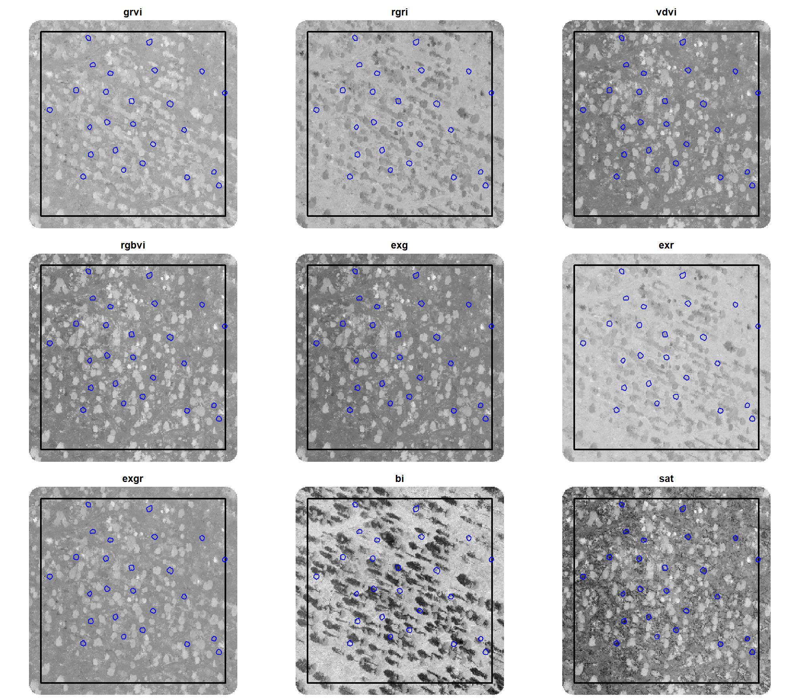
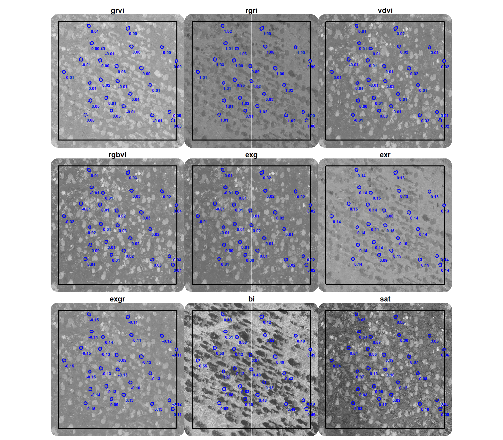
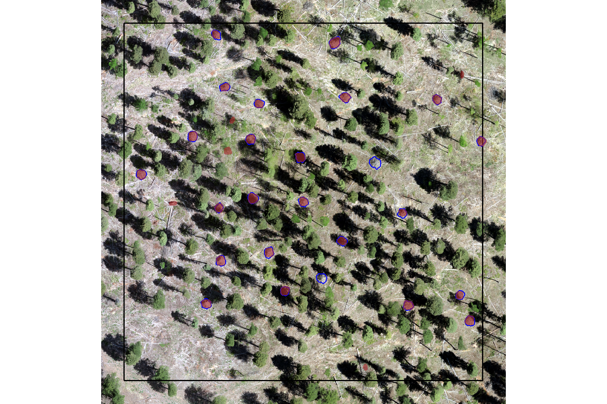

Section 6 Data Fusion
We’ll now test and approach that uses both aerial point cloud data (for structural information) and RGB imagery (for spectral information) which is a data fusion approach. First, we’ll identify initial candidate slash piles based on their structural form using our raster-based watershed segmentation approach. Then, we’ll use the RGB imagery to filter these candidates spectrally: relevant RGB vegetation indices such as Green Red Vegetation Index (GRVI), Red Green Ratio Index (RGRI), Visible Band-Difference Vegetation Index (VDVI), Red Green Ratio Index (RGRI), Red Green Blue Vegetation Index (RGBVI), and Excess Green (ExG) are calculated for each candidate segment, and thresholds are applied to remove those exhibiting high greenness. Index thresholds tested include those found to perform well in distinguishing green vegetation in previous research (Motohka et al. 2010; Wang et al. 2025; Riehle et al. 2020). Filtering candidate segments using spectral data will enhance our method’s ability to distinguish non-photosynthetic slash piles from living vegetation (e.g., small trees or shrubs) that might share similar structural profiles.
While RGB vegetation indices are good for separating green biomass, differentiating between various shades of brown, black, and white of non-vegetated surfaces like slash piles, rocks, and bare soil can be more challenging. Many common rock-forming minerals are “spectrally featureless” in the visible range, often appearing pale grey to white (Harris et al. 2010). As such, we will attempt to filter out very dark (black) or very light (white) boulders from the reddish-brown tones common of wood in slash piles using RGB indices that focus on overall brightness and color purity (Kior et al. 2024). The Brightness Index (BI) can help us exclude extremely dark (black; low BI) or bright (white; high BI) objects. Setting a minimum threshold for saturation (i.e. color purity) can remove achromatic features (like grey, black, or white objects that have very low saturation values close to 0) to help us isolate more chromatic (brown) slash piles.
This data fusion methodology leverages the complementary strengths of both data types, using 3D geometry for initial object segmentation and 2D spectral data to refine detections by excluding green biomass and potential rock and soil features that appear very dark or very light, leading to more accurate slash pile identification.
6.1 RGB Indices
For these formulas, \(R\), \(G\), and \(B\) represent the raw pixel values for the Red, Green, and Blue bands, respectively. For indices that use normalized values, \(r\), \(g\), and \(b\) are defined as:
\(r = \frac{R}{R+G+B}\) \(g = \frac{G}{R+G+B}\) \(b = \frac{B}{R+G+B}\)
Green Red Vegetation Index (GRVI)
\[GRVI = \frac{G - R}{G + R}\]
Red Green Ratio Index (RGRI)
\[RGRI = \frac{R}{G}\]
Visible Band-Difference Vegetation Index (VDVI)
\[VDVI = \frac{2G - R - B}{2G + R + B}\]
Red Green Blue Vegetation Index (RGBVI)
\[RGBVI = \frac{G^2 - (B \cdot R)}{G^2 + (B \cdot R)}\]
Excess Green (ExG)
\[ExG = 2g - r - b = \frac{2G - R - B}{R+G+B}\]
Excessive Red (ExR) \[ExR = 1.4r - g = \frac{1.4R - G}{R+G+B}\]
Excess Green-Excess Red (ExGR)
\[ExGR = 3g - 2.4r - b = \frac{3G - 2.4R - B}{R+G+B}\]
Brightness Index (BI)
\[BI = \sqrt{\frac{R^2+G^2+B^2}{3}}\]
Saturation
\[Saturation = \frac{\max(R,G,B) - \min(R,G,B)}{\max(R,G,B)}\]
6.1.1 Spectral Index Functions
Although there are dedicated R packages to calculate various spectral indicies (e.g. RStoolbox [Muller et al. 2025]), we’ll make our own to ensure data quality checks and to limit the spectral indices to those highlighted above.
# check raster bands and extract rgb layers
check_raster_bands <- function(rast, red_band_idx, green_band_idx, blue_band_idx) {
# convert to SpatRaster if input is from 'raster' package
if(
inherits(rast, "RasterStack")
|| inherits(rast, "RasterBrick")
){
rast <- terra::rast(rast)
}else if(!inherits(rast, "SpatRaster")){
stop("Input 'rast' must be a SpatRaster from the `terra` package")
}
# check if band indices are valid
num_bands <- terra::nlyr(rast)
# let 999999 be a cheat code
cheat_code <- 999999
if(
( red_band_idx!=cheat_code && red_band_idx > num_bands )
|| ( green_band_idx!=cheat_code && green_band_idx > num_bands )
|| ( blue_band_idx!=cheat_code && blue_band_idx > num_bands )
|| ( red_band_idx!=cheat_code && red_band_idx < 1 )
|| ( green_band_idx!=cheat_code && green_band_idx < 1 )
|| ( blue_band_idx!=cheat_code && blue_band_idx < 1 )
|| length(unique(c(red_band_idx,green_band_idx,blue_band_idx)))!=3
){
stop("Invalid band index provided. Band indices must correspond to existing, unique layers in the raster object.")
}
# extract bands
if(red_band_idx!=cheat_code){ R <- rast[[red_band_idx]] }else{ R <- rast[[1]] }
if(green_band_idx!=cheat_code){ G <- rast[[green_band_idx]] }else{ G <- rast[[1]] }
if(blue_band_idx!=cheat_code){ B <- rast[[blue_band_idx]] }else{ B <- rast[[1]] }
return(list(R = R, G = G, B = B))
}
# check_raster_bands(ortho_rast, red_band_idx=1, green_band_idx=3, blue_band_idx = 999999)
# calculate green red vegetation index (GRVI)
# (G - R) / (G + R)
spectral_index_grvi <- function(rast, red_band_idx, green_band_idx) {
bands <- check_raster_bands(rast, red_band_idx, green_band_idx, blue_band_idx = 999999) # blue_band_idx is dummy here
R <- bands$R
G <- bands$G
grvi <- (G - R) / (G + R)
names(grvi) <- "grvi"
return(grvi)
}
# spectral_index_grvi(ortho_rast,red_band_idx = 1, green_band_idx = 2) %>% terra::plot()
# red green ratio index (RGRI)
# R/G
spectral_index_rgri <- function(rast, red_band_idx, green_band_idx) {
bands <- check_raster_bands(rast, red_band_idx, green_band_idx, blue_band_idx = 999999) # blue_band_idx is dummy here
R <- bands$R
G <- bands$G
rgri <- R/G
names(rgri) <- "rgri"
return(rgri)
}
# spectral_index_grvi(ortho_rast,red_band_idx = 1, green_band_idx = 2) %>% terra::plot()
# calculate visible band-difference vegetation index (VDVI)
# (2G - R - B) / (2G + R + B)
spectral_index_vdvi <- function(rast, red_band_idx, green_band_idx, blue_band_idx) {
bands <- check_raster_bands(rast, red_band_idx, green_band_idx, blue_band_idx)
R <- bands$R
G <- bands$G
B <- bands$B
vdvi <- (2 * G - R - B) / (2 * G + R + B)
names(vdvi) <- "vdvi"
return(vdvi)
}
# spectral_index_vdvi(ortho_rast,red_band_idx = 1, green_band_idx = 2, blue_band_idx = 3) %>% terra::plot()
# calculate red green blue vegetation index (RGBVI)
# (G^2 - (B * R)) / (G^2 + (B * R))
spectral_index_rgbvi <- function(rast, red_band_idx, green_band_idx, blue_band_idx) {
bands <- check_raster_bands(rast, red_band_idx, green_band_idx, blue_band_idx)
R <- bands$R
G <- bands$G
B <- bands$B
rgbvi <- (G^2 - (B * R)) / (G^2 + (B * R))
names(rgbvi) <- "rgbvi"
return(rgbvi)
}
# spectral_index_rgbvi(ortho_rast,red_band_idx = 1, green_band_idx = 2, blue_band_idx = 3) %>% terra::plot()
# calculate excess green (ExG)
# (2G - R - B) / (R + G + B) (using normalized RGB values)
# 2G - R - B (using raw values, then normalized by sum of R+G+B)
spectral_index_exg <- function(rast, red_band_idx, green_band_idx, blue_band_idx) {
bands <- check_raster_bands(rast, red_band_idx, green_band_idx, blue_band_idx)
R <- bands$R
G <- bands$G
B <- bands$B
# Calculate normalized RGB values
sum_rgb <- R + G + B
r_norm <- R / sum_rgb
g_norm <- G / sum_rgb
b_norm <- B / sum_rgb
exg <- (2 * g_norm - r_norm - b_norm)
names(exg) <- "exg"
return(exg)
}
# spectral_index_exg(ortho_rast,red_band_idx = 1, green_band_idx = 2, blue_band_idx = 3) %>% terra::plot()
# calculate brightness index (BI)
# sqrt((R^2 + G^2 + B^2) / 3)
spectral_index_bi <- function(rast, red_band_idx, green_band_idx, blue_band_idx) {
bands <- check_raster_bands(rast, red_band_idx, green_band_idx, blue_band_idx)
R <- bands$R
G <- bands$G
B <- bands$B
bi <- sqrt((R^2 + G^2 + B^2) / 3)
# normalize to 0-1 range
max_brightness = max(
terra::minmax(R)[2]
, terra::minmax(G)[2]
, terra::minmax(B)[2]
, na.rm = T
)
bi <- bi/max_brightness
names(bi) <- "bi"
return(bi)
}
# spectral_index_bi(ortho_rast,red_band_idx = 1, green_band_idx = 2, blue_band_idx = 3) %>% terra::plot()
# calculate excessive red (ExR)
# 1.4r - g, where r and g are normalized RGB values.
spectral_index_exr <- function(rast, red_band_idx, green_band_idx, blue_band_idx){
bands <- check_raster_bands(rast, red_band_idx, green_band_idx, blue_band_idx)
R <- bands$R
G <- bands$G
B <- bands$B
# Calculate normalized RGB values
sum_rgb <- R + G + B
r_norm <- R / sum_rgb
g_norm <- G / sum_rgb
exr <- (1.4 * r_norm - g_norm)
names(exr) <- "exr"
return(exr)
}
#' calculate excess green-excess red (ExGR)
#' 3g - 2.4r - b, where r, g, b are normalized RGB values.
#' equivalent to ExG - ExR.
spectral_index_exgr <- function(rast, red_band_idx, green_band_idx, blue_band_idx) {
bands <- check_raster_bands(rast, red_band_idx, green_band_idx, blue_band_idx)
R <- bands$R
G <- bands$G
B <- bands$B
# Calculate normalized RGB values
sum_rgb <- R + G + B
r_norm <- R / sum_rgb
g_norm <- G / sum_rgb
b_norm <- B / sum_rgb
exgr <- (3 * g_norm - 2.4 * r_norm - b_norm)
names(exgr) <- "exgr"
return(exgr)
}
# calculate saturation (SAT)
# (max(R,G,B) - min(R,G,B)) / max(R,G,B)
spectral_index_saturation <- function(rast, red_band_idx, green_band_idx, blue_band_idx) {
bands <- check_raster_bands(rast, red_band_idx, green_band_idx, blue_band_idx)
R <- bands$R
G <- bands$G
B <- bands$B
max_rgb <- max(R, G, B)
min_rgb <- min(R, G, B)
sat <- (max_rgb - min_rgb) / max_rgb
names(sat) <- "sat"
return(sat)
}
# spectral_index_saturation(ortho_rast,red_band_idx = 1, green_band_idx = 2, blue_band_idx = 3) %>% terra::plot()
# calculate all indices
calculate_all_rgb_indices <- function(raster_obj, red_band_idx, green_band_idx, blue_band_idx) {
# call individual index functions
grvi_layer <- spectral_index_grvi(raster_obj, red_band_idx, green_band_idx)
rgri_layer <- spectral_index_rgri(raster_obj, red_band_idx, green_band_idx)
vdvi_layer <- spectral_index_vdvi(raster_obj, red_band_idx, green_band_idx, blue_band_idx)
rgbvi_layer <- spectral_index_rgbvi(raster_obj, red_band_idx, green_band_idx, blue_band_idx)
exg_layer <- spectral_index_exg(raster_obj, red_band_idx, green_band_idx, blue_band_idx)
exr_layer <- spectral_index_exr(raster_obj, red_band_idx, green_band_idx, blue_band_idx)
exgr_layer <- spectral_index_exgr(raster_obj, red_band_idx, green_band_idx, blue_band_idx)
bi_layer <- spectral_index_bi(raster_obj, red_band_idx, green_band_idx, blue_band_idx)
sat_layer <- spectral_index_saturation(raster_obj, red_band_idx, green_band_idx, blue_band_idx)
# stack all calculated indices into a single spatraster
all_indices <- c(
grvi_layer
, rgri_layer
, vdvi_layer
, rgbvi_layer
, exg_layer
, exr_layer
, exgr_layer
, bi_layer
, sat_layer
)
return(all_indices)
}let’s test this calculate_all_rgb_indices() function with our orthomosaic
# calculate_all_rgb_indices
all_rgb_indices_rast <- calculate_all_rgb_indices(ortho_rast,red_band_idx = 1, green_band_idx = 2, blue_band_idx = 3)what did we get?
## [1] "grvi" "rgri" "vdvi" "rgbvi" "exg" "exr" "exgr" "bi" "sat"let’s plot all of those indices for the entire extent of our orthomoasic
# plot
terra::plot(
all_rgb_indices_rast
, nc = 3
# , nr = 3
, mar = c(0.5,0.5,2,0.5)
, axes = FALSE
, legend = F
)
we can also look at the correlation between the different indices
# investigate correlation among covariates
all_rgb_indices_rast %>%
terra::pairs(
maxcells = min(11111, terra::ncell(all_rgb_indices_rast)*.01)
)
many of these spectral indices are highly (even perfectly) correlated, meaning they provide redundant information. to streamline our method and ensure we utilize unique spectral insights for distinguishing slash piles from the surrounding terrain and other objects, we will select only one index from each correlated group. GRVI, RGRI, and ExR are highly correlated, as are VDVI, RGBVI, and ExG. we’ll choose one from each of these sets.
here is a plot of the different spectral indices (high values are brighter, low values are darker) on our example area we were working with in the last section with the ground truth piles in blue
all_rgb_indices_rast %>%
terra::crop(example_aoi %>% sf::st_buffer(7.3) %>% terra::vect()) %>%
terra::mask(example_aoi %>% sf::st_buffer(7.3) %>% terra::vect()) %>%
terra::plot(
nc = 3
, col = grDevices::gray.colors(111, start = 0, end = 1)
, mar = c(0.5,0.5,2,0.5)
, axes = FALSE
, legend = F
, fun = function(){
lines(terra::vect(example_aoi), col="black", lwd=2)
# add a second vector outline (blue)
lines(
slash_piles_polys %>%
dplyr::inner_join(
slash_piles_polys %>%
sf::st_transform(sf::st_crs(example_aoi)) %>%
sf::st_intersection(example_aoi) %>%
sf::st_drop_geometry() %>%
dplyr::select(pile_id)
, by = "pile_id"
) %>%
sf::st_transform(sf::st_crs(example_aoi)) %>%
terra::vect()
, col = "blue", lwd = 1.3)
}
)
6.1.2 Spectral Index of Polygons
we now need a function to crop the raster with all spectral indices given a polygon input data and return the spectral index values as columns attached to the polygon
extract_rast_values <- function(sf_data, rast, fun_agg = mean) {
# checks
if(!inherits(rast, "SpatRaster")){
stop("Input `rast` must be a SpatRaster object.")
}
if(!inherits(sf_data, "sf")){
stop("Input `sf_data` must be an sf data frame.")
}
if(!all(sf::st_geometry_type(sf_data) %in% c("POLYGON", "MULTIPOLYGON"))) {
stop("Input `sf_data` must contain polygon geometries.")
}
if(!is.function(fun_agg)) {
stop("Argument `fun_agg` must be a function (e.g., mean, median, sum).")
}
# crs
sf_data <- sf_data %>% sf::st_transform(terra::crs(rast))
# extract values for each layer within each polygon
extracted_values <- terra::extract(
x = rast
, y = sf_data
, fun = fun_agg
, na.rm = TRUE
)
# clean data
fun_name <- deparse(substitute(fun_agg))
extracted_values <- extracted_values %>%
dplyr::select(-ID) %>%
dplyr::rename_with(
~ paste0(
"rast_"
# , fun_name ### if we want to have custom output depending on the fun_agg
, "agg"
, "_"
, .x
, recycle0 = TRUE
)
)
# Merge the extracted values back to the original sf data frame
# The row order is preserved by terra::extract, so a direct cbind is safe
# if no rows were dropped due to spatial mismatch.
# For robustness, we can explicitly join by row ID if needed, but for simple cases, cbind works.
# Assuming sf_data has a unique ID column or row order is stable:
sf_data_with_indices <- sf_data %>% dplyr::bind_cols(extracted_values)
return(sf_data_with_indices)
}
# extract_rast_values(slash_piles_polys, rast = ortho_rast) %>% dplyr::glimpse()6.2 Ground Truth Pile Spectral Summary
let’s calculate the various spectral indices on our ground truth slash pile polygons by getting the median value within the bounds of the pile
# extract_rast_values
rgb_indices_df <- extract_rast_values(slash_piles_polys, rast = all_rgb_indices_rast, fun_agg = median)
rgb_indices_df %>% dplyr::glimpse()## Rows: 187
## Columns: 28
## $ pile_id <dbl> 3, 4, 5, 6, 8, 11, 13, 15, 16, 17, 19, 20, 21, 22,…
## $ comment <chr> NA, NA, NA, NA, "Mechanical Pile", NA, NA, NA, NA,…
## $ comment2 <chr> NA, NA, NA, NA, NA, NA, NA, NA, NA, NA, NA, NA, NA…
## $ height_ft <dbl> NA, NA, NA, NA, 14.0, NA, NA, NA, NA, NA, NA, NA, …
## $ diameter_ft <dbl> NA, NA, NA, NA, 22.0, NA, NA, NA, NA, NA, NA, NA, …
## $ xcoord <dbl> NA, NA, NA, NA, 1019078, NA, NA, NA, NA, NA, NA, N…
## $ ycoord <dbl> NA, NA, NA, NA, 4334862, NA, NA, NA, NA, NA, NA, N…
## $ refcorner <chr> NA, NA, NA, NA, "G4", NA, NA, NA, NA, NA, NA, NA, …
## $ row_number <int> NA, NA, NA, NA, 93, NA, NA, NA, NA, NA, NA, NA, NA…
## $ geometry <POLYGON [m]> POLYGON ((499341.7 4317759,..., POLYGON ((…
## $ image_gt_diameter_m <dbl> 6.469934, 6.867876, 6.387723, 6.589466, 7.595808, …
## $ height_m <dbl> NA, NA, NA, NA, 4.2672, NA, NA, NA, NA, NA, NA, NA…
## $ field_diameter_m <dbl> NA, NA, NA, NA, 6.7056, NA, NA, NA, NA, NA, NA, NA…
## $ field_radius_m <dbl> NA, NA, NA, NA, 3.3528, NA, NA, NA, NA, NA, NA, NA…
## $ image_gt_area_m2 <dbl> 25.166539, 32.028082, 22.928349, 26.261937, 28.909…
## $ field_gt_area_m2 <dbl> NA, NA, NA, NA, 35.315484, NA, NA, NA, NA, NA, NA,…
## $ image_gt_volume_m3 <dbl> NA, NA, NA, NA, 61.682109, NA, NA, NA, NA, NA, NA,…
## $ field_gt_volume_m3 <dbl> NA, NA, NA, NA, 75.34912, NA, NA, NA, NA, NA, NA, …
## $ is_in_stand <lgl> FALSE, FALSE, FALSE, FALSE, TRUE, FALSE, FALSE, FA…
## $ rast_agg_grvi <dbl> -0.032584086, -0.028242828, -0.052384051, -0.04705…
## $ rast_agg_rgri <dbl> 1.0673631, 1.0581273, 1.1105597, 1.0987591, 1.0457…
## $ rast_agg_vdvi <dbl> -0.01943105, -0.02085224, -0.02775876, -0.02476903…
## $ rast_agg_rgbvi <dbl> -0.03828319, -0.04091964, -0.05317091, -0.04778023…
## $ rast_agg_exg <dbl> -0.02574134, -0.02761107, -0.03667236, -0.03275494…
## $ rast_agg_exr <dbl> 0.16016840, 0.15627252, 0.17784675, 0.17298965, 0.…
## $ rast_agg_exgr <dbl> -0.1866028, -0.1835047, -0.2156208, -0.2073676, -0…
## $ rast_agg_bi <dbl> 0.48999473, 0.50380811, 0.41243017, 0.43621239, 0.…
## $ rast_agg_sat <dbl> 0.06838244, 0.06986231, 0.11602359, 0.09983881, 0.…# quick summary
rgb_indices_df %>%
sf::st_drop_geometry() %>%
dplyr::select(tidyselect::starts_with("rast_agg_")) %>%
summary()## rast_agg_grvi rast_agg_rgri rast_agg_vdvi rast_agg_rgbvi
## Min. :-0.0523841 Min. :0.7814 Min. :-0.0380903 Min. :-0.066556
## 1st Qu.:-0.0183949 1st Qu.:0.9919 1st Qu.:-0.0150468 1st Qu.:-0.028208
## Median :-0.0051776 Median :1.0104 Median : 0.0060960 Median : 0.016233
## Mean :-0.0007363 Mean :1.0030 Mean :-0.0001669 Mean : 0.002146
## 3rd Qu.: 0.0040900 3rd Qu.:1.0375 3rd Qu.: 0.0138264 3rd Qu.: 0.028844
## Max. : 0.1227404 Max. :1.1106 Max. : 0.0223162 Max. : 0.045439
## rast_agg_exg rast_agg_exr rast_agg_exgr rast_agg_bi
## Min. :-0.0501504 Min. :0.03125 Min. :-0.21562 Min. :0.05521
## 1st Qu.:-0.0199623 1st Qu.:0.13239 1st Qu.:-0.15365 1st Qu.:0.35286
## Median : 0.0081446 Median :0.13834 Median :-0.13253 Median :0.47475
## Mean :-0.0001212 Mean :0.13466 Mean :-0.13491 Mean :0.40386
## 3rd Qu.: 0.0185206 3rd Qu.:0.15020 3rd Qu.:-0.11602 3rd Qu.:0.50461
## Max. : 0.0299779 Max. :0.17785 Max. :-0.03701 Max. :0.61996
## rast_agg_sat
## Min. :0.02616
## 1st Qu.:0.06252
## Median :0.07335
## Mean :0.09759
## 3rd Qu.:0.11510
## Max. :0.36490let’s plot it
# pivot
agg_df_temp <- rgb_indices_df %>%
sf::st_drop_geometry() %>%
dplyr::select(tidyselect::starts_with("rast_agg_")) %>%
tidyr::pivot_longer(cols = dplyr::everything()) %>%
dplyr::mutate(name = stringr::str_remove_all(name,"rast_agg_") %>% stringr::str_to_upper())
# plot
ggplot2::ggplot() +
ggplot2::geom_density(
data = agg_df_temp
, mapping = ggplot2::aes(x = value, fill = name)
, color = NA, alpha = 0.8
) +
ggplot2::geom_vline(
data = agg_df_temp %>% dplyr::group_by(name) %>% dplyr::mutate(value=median(value,na.rm=T))
, mapping = ggplot2::aes(xintercept = value, color = "median")
, linetype = "solid", lwd = 1
) +
ggplot2::geom_vline(
data = agg_df_temp %>% dplyr::group_by(name) %>% dplyr::mutate(value=quantile(value,na.rm=T,probs=0.025))
, mapping = ggplot2::aes(xintercept = value, color = "p2.5–p97.5")
, linetype = "solid", lwd = 1
) +
ggplot2::geom_vline(
data = agg_df_temp %>% dplyr::group_by(name) %>% dplyr::mutate(value=quantile(value,na.rm=T,probs=(1-0.025)))
, mapping = ggplot2::aes(xintercept = value, color = "p2.5–p97.5")
, linetype = "solid", lwd = 1
) +
ggplot2::scale_fill_viridis_d(option = "turbo", begin = 0.1, end = 0.9, alpha = 0.7) +
# ggplot2::scale_fill_brewer(palette = "Set2") +
ggplot2::scale_color_manual(values = c("gray22","gray","gray")) +
ggplot2::scale_x_continuous(breaks = scales::breaks_extended(8)) +
ggplot2::scale_y_continuous(NULL, breaks = NULL) +
ggplot2::facet_wrap(
facets = dplyr::vars(name)
, ncol = 3
, scales = "free"
) +
ggplot2::labs(
x = "", y = "", color = "", fill = ""
) +
ggplot2::theme_light() +
ggplot2::theme(
legend.position = "top"
, strip.text = ggplot2::element_text(size = 11, color = "black", face = "bold")
, axis.text.x = ggplot2::element_text(size = 7)
, axis.text.y = ggplot2::element_blank()
) +
ggplot2::guides(fill = "none")
that’s interesting. let’s see how those values compare with the thresholds identified in the research to identify green crops, trees, and shrubs using RGB spectral indicies
| Index | Likely Crop | Likely Tree | Likely Shrub | Source |
|---|---|---|---|---|
| VDVI | x > 0.06 | x > 0.04 | x > 0.03 | Wang et al. 2025 |
| RGRI | x < 0.63 | x < 0.70 | x < 0.52 | Wang et al. 2025 |
| RGBVI | x > -20.0 | x > -22.0 | x > -18.0 | Wang et al. 2025 |
| ExG | x > 58.0 | x > 59.5 | x > 59.0 | Wang et al. 2025 |
| GRVI | x > 0.0 | x > 0.0 | Motohka et al. 2010 | |
| ExGR | x > 0.0 | x > 0.0 | x > 0.0 | Riehle et al. 2020 |
- VDVI: setting a threshold to remove candidate slash piles with VDVI>0.03 should work well
- RGRI: setting a threshold to remove candidate slash piles with RGRI<0.70 should work well
- RGBVI: setting a threshold to remove candidate slash piles with RGBVI>-18.0 should not work well
- There appears to be a mis-match between the range of values we calculated ([-1.00, 1.00]) and their range ([-50, 78])
- ExG: setting a threshold to remove candidate slash piles with ExG>59.5 should not work well
- There appears to be a mis-match between the range of values we calculated ([-1.00, 2.00]) and their range ([0, 150])
- GRVI: setting a threshold to remove candidate slash piles with GRVI>0.0 should work moderately well
- We may need to raise this threshold to remove candidate slash piles with GRVI>0.05, for example
- ExGR: setting a threshold to remove candidate slash piles with ExGR>0.0 should work well
- BI: setting a threshold to remove candidate slash piles that are extremely dark (BI<0.10) or bright (BI>0.90) should work well
- Saturation: setting a threshold to remove candidate slash piles that have low saturation values (SAT<0.03) should work well
Based on these thresholds identified in the literature and our objective to remove very highly correlated indices, we’ll proceed with the following five indices to refine the structurally detected candidate slash piles:
- RGRI
- VDVI
- ExGR
- BI
- Saturation (SAT)
here is a plot of the median value of the different spectral indices (high values are brighter, low values are darker) within the bounds of the pile on our example area we were working with in the last section
polys_temp <-
rgb_indices_df %>%
dplyr::inner_join(
slash_piles_polys %>%
sf::st_transform(sf::st_crs(example_aoi)) %>%
sf::st_intersection(example_aoi) %>%
sf::st_drop_geometry() %>%
dplyr::select(pile_id)
, by = "pile_id"
) %>%
sf::st_transform(sf::st_crs(example_aoi)) %>%
dplyr::select(pile_id, tidyselect::starts_with("rast_agg_")) %>%
tidyr::pivot_longer(cols = tidyselect::starts_with("rast_agg_")) %>%
dplyr::mutate(name = stringr::str_remove(name,"rast_agg_"))
# # dplyr::filter(name=="grvi") %>%
# ggplot2::ggplot() +
# ggplot2::geom_sf(mapping=ggplot2::aes(fill=value)) +
# ggplot2::facet_wrap(facets=dplyr::vars(name)) +
# ggplot2::theme_void() +
# ggplot2::theme(legend.position = "top")
# rast clip
rast_temp <- all_rgb_indices_rast %>%
terra::crop(example_aoi %>% sf::st_buffer(7.3) %>% terra::vect()) %>%
terra::mask(example_aoi %>% sf::st_buffer(7.3) %>% terra::vect())
# plot list
plt_list_temp <-
names(all_rgb_indices_rast) %>%
# sample(6) %>%
purrr::map(
\(x)
ggplot2::ggplot() +
ggplot2::geom_tile(
data = rast_temp[[x]] %>%
terra::as.data.frame(xy=T) %>%
dplyr::rename(f=3)
, mapping = ggplot2::aes(x = x, y = y, fill = f)
, alpha = 0.9
) +
ggplot2::geom_sf(
data = example_aoi
, color = "black", fill = NA, lwd = 0.8
) +
ggplot2::geom_sf(
data = polys_temp %>% dplyr::filter(name == x)
, mapping = ggplot2::aes(fill=value)
, color = "blue", lwd = 0.6
) +
# ggplot2::geom_sf_text(
# data = polys_temp %>% dplyr::filter(name == x)
# , mapping = ggplot2::aes(label=scales::comma(value, accuracy=0.01), fontface = "bold")
# , size = 1.7, color = "blue"
# , vjust = 0, hjust = 0.5
# ) +
ggrepel::geom_text_repel(
data = polys_temp %>%
dplyr::filter(name == x) %>%
sf::st_point_on_surface() %>%
dplyr::mutate(
x_coord = sf::st_coordinates(.)[, 1]
, y_coord = sf::st_coordinates(.)[, 2]
)
, mapping = ggplot2::aes(x = x_coord, y = y_coord, label=scales::comma(value, accuracy=0.01), fontface = "bold")
, nudge_x = 0.5 # initial horizontal nudge
, nudge_y = -0.2 # initial vertical nudge
, size = 2.2, color = "blue"
, force = 1
, box.padding = 0.3 # Increase padding to push labels further away
# , point.padding = 0.7 # Ensure distance from the original point
, min.segment.length = 0.5 # Minimum length of the connecting line segment
, segment.color = NA
) +
ggplot2::scale_fill_distiller(palette = "Greys") +
# ggplot2::scale_fill_gradientn(colors = grDevices::gray.colors(111, start = 0, end = 1)) +
ggplot2::scale_x_continuous(expand = c(0, 0)) +
ggplot2::scale_y_continuous(expand = c(0, 0)) +
ggplot2::labs(
fill = x
, subtitle = x
) +
ggplot2::theme_void() +
ggplot2::theme(
legend.position = "none"
, plot.subtitle = ggplot2::element_text(size = 11, face = "bold", hjust = 0.5)
)
)
# plt_list_temp
# patchwork
patchwork::wrap_plots(
plt_list_temp
, ncol = 3
)
6.2.1 Voting System
let’s consider a voting system approach for filtering candidate slash piles using the multiple spectral indices. a voting system could allow for a more robust and nuanced decision than relying on a single index.
let’s make a highly specialized function using the data returned by out extract_rast_values() function
rgb_indices_threshold_voting <- function(
rgb_indices_df
# define ranges to *keep* piles
, th_rgri = c((0.7+0.001),Inf) # increase each by 0.001 since we'll be checking lower<=x<=upper
, th_vdvi = c(-Inf,(0.03+0.001)) # increase each by 0.001 since we'll be checking lower<=x<=upper
, th_exgr = c(-Inf,0)
, th_bi = c(0.1,0.9)
, th_sat = c(0.03,Inf)
){
# checks
if(!inherits(rgb_indices_df, "data.frame")){
stop("Input `rgb_indices_df` must be an data.frame.")
}
# names
agg_cols <- c("rast_agg_exgr","rast_agg_rgri","rast_agg_vdvi","rast_agg_bi","rast_agg_sat") # "rast_agg_rgbvi",
nm_diff <- base::setdiff(
agg_cols
, names(rgb_indices_df)
)
if(length(nm_diff)>0){
stop(paste0("required variables missing:\n", "... ", paste(nm_diff, collapse = ", ") ))
}
# thresholds
if(length(th_exgr)!=2 || th_exgr[1]>th_exgr[2]){
stop("Input `th_exgr` must be of length 2 as: c(lower,upper) defining the range of values to keep where lower<=upper")
}
if(length(th_rgri)!=2 || th_rgri[1]>th_rgri[2]){
stop("Input `th_rgri` must be of length 2 as: c(lower,upper) defining the range of values to keep where lower<=upper")
}
if(length(th_vdvi)!=2 || th_vdvi[1]>th_vdvi[2]){
stop("Input `th_vdvi` must be of length 2 as: c(lower,upper) defining the range of values to keep where lower<=upper")
}
if(length(th_bi)!=2 || th_bi[1]>th_bi[2]){
stop("Input `th_bi` must be of length 2 as: c(lower,upper) defining the range of values to keep where lower<=upper")
}
if(length(th_sat)!=2 || th_sat[1]>th_sat[2]){
stop("Input `th_sat` must be of length 2 as: c(lower,upper) defining the range of values to keep where lower<=upper")
}
# get rid of columns we'll create
rgb_indices_df <- rgb_indices_df %>%
# throw in hey_xxxxxxxxxx to test it works if we include non-existant columns
dplyr::select( -dplyr::any_of(c(
"hey_xxxxxxxxxx"
, "inrange_th_exgr"
, "inrange_th_rgri"
, "inrange_th_vdvi"
, "inrange_th_bi"
, "inrange_th_sat"
)))
# check threshold
ret_df <- rgb_indices_df %>%
# dplyr::select(dplyr::all_of(agg_cols)) %>%
dplyr::mutate(
inrange_th_exgr = ifelse(
!is.na(rast_agg_exgr)
& rast_agg_exgr >= th_exgr[1]
& rast_agg_exgr <= th_exgr[2]
, 1, 0
)
, inrange_th_rgri = ifelse(
!is.na(rast_agg_rgri)
& rast_agg_rgri >= th_rgri[1]
& rast_agg_rgri <= th_rgri[2]
, 1, 0
)
, inrange_th_vdvi = ifelse(
!is.na(rast_agg_vdvi)
& rast_agg_vdvi >= th_vdvi[1]
& rast_agg_vdvi <= th_vdvi[2]
, 1, 0
)
, inrange_th_bi = ifelse(
!is.na(rast_agg_bi)
& rast_agg_bi >= th_bi[1]
& rast_agg_bi <= th_bi[2]
, 1, 0
)
, inrange_th_sat = ifelse(
!is.na(rast_agg_sat)
& rast_agg_sat >= th_sat[1]
& rast_agg_sat <= th_sat[2]
, 1, 0
)
) %>%
dplyr::rowwise() %>%
dplyr::mutate(
inrange_th_votes = sum(
dplyr::c_across(tidyselect::starts_with("inrange_th_"))
, na.rm = T
) %>%
dplyr::coalesce(0)
) %>%
ungroup()
#return
return(ret_df)
}let’s look at the columns we get from our rgb_indices_threshold_voting() function
rgb_indices_df <- rgb_indices_threshold_voting(rgb_indices_df=rgb_indices_df)
# huh?
rgb_indices_df %>%
sf::st_drop_geometry() %>%
dplyr::select(tidyselect::starts_with("inrange_th_")) %>%
summary()## inrange_th_exgr inrange_th_rgri inrange_th_vdvi inrange_th_bi
## Min. :1 Min. :1 Min. :1 Min. :0.0000
## 1st Qu.:1 1st Qu.:1 1st Qu.:1 1st Qu.:1.0000
## Median :1 Median :1 Median :1 Median :1.0000
## Mean :1 Mean :1 Mean :1 Mean :0.9358
## 3rd Qu.:1 3rd Qu.:1 3rd Qu.:1 3rd Qu.:1.0000
## Max. :1 Max. :1 Max. :1 Max. :1.0000
## inrange_th_sat inrange_th_votes
## Min. :0.0000 Min. :4.00
## 1st Qu.:1.0000 1st Qu.:5.00
## Median :1.0000 Median :5.00
## Mean :0.9947 Mean :4.93
## 3rd Qu.:1.0000 3rd Qu.:5.00
## Max. :1.0000 Max. :5.00notice the “Mean” value in the summary above is the proportion of ground truth piles that successfully met the spectral index threshold criteria (i.e. piles to be “kept”). it looks like the SAT threshold was most unaligned with these ground truth piles, something we anticipated by looking at the distributions above compared the threshold value recommended in the literature for detecting green vegetation.
let’s look at the proportional distribution of ground truth piles meeting the threshold by individual spectral index
rgb_indices_df %>%
sf::st_drop_geometry() %>%
dplyr::select(tidyselect::starts_with("inrange_th_")) %>%
tidyr::pivot_longer(cols = dplyr::everything()) %>%
dplyr::mutate(name = stringr::str_remove_all(name,"inrange_th_") %>% stringr::str_to_upper()) %>%
dplyr::filter(name!="VOTES") %>%
dplyr::count(name,value) %>%
dplyr::group_by(name) %>%
dplyr::mutate(
pct = n/sum(n)
, value = factor(value, levels = 0:1, labels = c("outside threshold","within threshold"), ordered = T)
, lab = paste0(scales::percent(pct,accuracy=0.1), "\n(n=", scales::comma(n,accuracy=1), ")")
) %>%
ggplot2::ggplot(
mapping = ggplot2::aes(x = value, y = pct, label = lab, fill = value)
) +
ggplot2::geom_col(
width = 0.6
, color = NA, alpha = 0.8
) +
ggplot2::geom_text(color = "black", size = 3, vjust = -0.2) +
ggplot2::scale_fill_viridis_d(option = "magma", begin = 0.3, end = 0.7) +
ggplot2::scale_y_continuous(
breaks = seq(0,1,by=0.2)
, labels = scales::percent
, expand = ggplot2::expansion(mult = c(0,0.2))
) +
ggplot2::facet_wrap(
facets = dplyr::vars(name)
, ncol = 2
) +
ggplot2::labs(
x = "", y = "", color = "", fill = ""
) +
ggplot2::theme_light() +
ggplot2::theme(
legend.position = "none"
, strip.text = ggplot2::element_text(size = 11, color = "black", face = "bold")
, axis.text.x = ggplot2::element_text(size = 12)
, axis.text.y = ggplot2::element_blank()
)
and let’s look at the distribution of ground truth piles based on the number of individual spectral index thresholds met. we’ll use this count as our voting system.
dplyr::tibble(value=0:5) %>%
dplyr::left_join(
rgb_indices_df %>%
sf::st_drop_geometry() %>%
dplyr::select(tidyselect::starts_with("inrange_th_votes")) %>%
tidyr::pivot_longer(cols = dplyr::everything()) %>%
dplyr::mutate(name = stringr::str_remove_all(name,"inrange_th_") %>% stringr::str_to_upper()) %>%
dplyr::count(name,value)
, by = dplyr::join_by(value)
) %>%
dplyr::mutate(
n = dplyr::coalesce(n,0)
, pct = n/sum(n)
, lab = paste0(scales::percent(pct,accuracy=0.1), "\n(n=", scales::comma(n,accuracy=1), ")")
, value = factor(value)
) %>%
ggplot2::ggplot(
mapping = ggplot2::aes(x = value, y = pct, label = lab, fill = value)
) +
ggplot2::geom_col(
width = 0.6
, color = NA, alpha = 0.8
) +
ggplot2::geom_text(color = "black", size = 4, vjust = -0.2) +
ggplot2::scale_fill_viridis_d(option = "mako", direction=-1) +
ggplot2::scale_y_continuous(
labels = scales::percent
, expand = ggplot2::expansion(mult = c(0,0.15))
) +
ggplot2::labs(
y = "", x = "spectral index threshold votes", color = "", fill = ""
, subtitle = "distribution of ground truth piles meeting spectral index thresholds"
) +
ggplot2::theme_light() +
ggplot2::theme(
legend.position = "none"
, axis.text.x = ggplot2::element_text(size = 12)
, axis.text.y = ggplot2::element_blank()
)
we can use this spectral index voting system to filter candidate slash piles with a user-defined parameter which defines the sensitivity of filtering based on the spectral information. For example, a value of “5” would heavily weight the spectral information in determining which piles to keep while a value of “1” would put less weight on the spectral data.
let’s see what some of those piles with the fewest votes look like on the imagery
# filter for the plots with the fewest votes
dta_temp <- rgb_indices_df %>%
dplyr::filter(inrange_th_votes<=4) %>%
dplyr::slice_sample(n=12) %>%
sf::st_transform(terra::crs(ortho_rast))
# dta_temp %>% sf::st_drop_geometry() %>% dplyr::select(tidyselect::starts_with("rast_agg")) %>% summary()
# plot on ortho
plts_temp <-
1:nrow(dta_temp) %>%
purrr::map(function(x){
dta <- dta_temp %>% dplyr::slice(x)
dta <- dta %>%
dplyr::bind_cols(
dta %>%
sf::st_drop_geometry() %>%
dplyr::select(tidyselect::starts_with("inrange_th_")) %>%
tidyr::pivot_longer(cols = dplyr::everything()) %>%
dplyr::mutate(name = stringr::str_remove_all(name,"inrange_th_") %>% stringr::str_to_upper()) %>%
dplyr::filter(name!="VOTES" & value == 0) %>%
dplyr::select(-value) %>%
tidyr::pivot_wider(values_from = name) %>%
dplyr::rowwise() %>%
dplyr::mutate(
lab = paste(
dplyr::c_across(dplyr::everything())
, collapse = ", "
)
) %>%
dplyr::select(lab)
)
ortho_plt_fn(my_ortho_rast = ortho_rast, stand =dta) +
ggplot2::geom_sf(data = dta, fill = NA, color = "white", lwd = 0.6) +
ggplot2::labs(subtitle = paste0("Outside Threshold:\n",dta$lab)) +
ggplot2::theme(plot.subtitle = ggplot2::element_text(size = 9))
})
# combine
patchwork::wrap_plots(
plts_temp
, ncol = 4
)
all of those piles would have been voted out based on SAT or BI since they are either in shadows or the dead wood appears very bright/white (perhaps we need to adjust those thresholds?). let’s see a summary of those spectral index values for these piles with the fewest votes
## rast_agg_bi rast_agg_sat
## Min. :0.05521 Min. :0.1229
## 1st Qu.:0.06566 1st Qu.:0.1978
## Median :0.07075 Median :0.2542
## Mean :0.07154 Mean :0.2538
## 3rd Qu.:0.07920 3rd Qu.:0.2985
## Max. :0.08803 Max. :0.36496.3 Candidate Polygon Spectral Filtering Function
let’s put all of this together to define a function that takes as input: 1) a spatial data frame of candidate polygons; 2) a raster with RGB spectral data; 3) user-defined spectral weighting (voting system)
polygon_spectral_filtering <- function(
sf_data
, rgb_rast
# define the band index
, red_band_idx
, green_band_idx
, blue_band_idx
# spectral weighting
, spectral_weight = 3
) {
### could make these parameters
th_rgri <- c((0.7+0.001),Inf) # increase each by 0.001 since we'll be checking lower<=x<=upper
th_vdvi <- c(-Inf,(0.03+0.001)) # increase each by 0.001 since we'll be checking lower<=x<=upper
th_exgr = c(-Inf,0)
th_bi <- c(0.1,0.9)
th_sat <- c(0.03,Inf)
# checks
if(!inherits(rgb_rast, "SpatRaster")){
stop("Input `rast` must be a SpatRaster object.")
}
if(!inherits(sf_data, "sf")){
stop("Input `sf_data` must be an sf data frame.")
}
if(!all(sf::st_geometry_type(sf_data) %in% c("POLYGON", "MULTIPOLYGON"))) {
stop("Input `sf_data` must contain polygon geometries.")
}
spectral_weight <- as.numeric(spectral_weight)
if( !(spectral_weight %in% c(0:5)) ){
stop("Input `spectral_weight` must be a number between 0 (no filtering based on spectral) and 5 (highest weighting of spectral data)")
}
# if you don't want to do it, then why do it?
if(spectral_weight==0){
return(sf_data)
}
##################################################
# calculate_all_rgb_indices
##################################################
all_rgb_indices_rast <- calculate_all_rgb_indices(
raster_obj = rgb_rast
, red_band_idx = red_band_idx
, green_band_idx = green_band_idx
, blue_band_idx = blue_band_idx
)
##################################################
# extract_rast_values
##################################################
rgb_indices_df <- extract_rast_values(
sf_data = sf_data %>% dplyr::ungroup()
, rast = all_rgb_indices_rast
, fun_agg = median
)
##################################################
# rgb_indices_threshold_voting
##################################################
rgb_indices_df <- rgb_indices_threshold_voting(
rgb_indices_df=rgb_indices_df
, th_rgri = th_rgri
, th_vdvi = th_vdvi
, th_exgr = th_exgr
, th_bi = th_bi
, th_sat = th_sat
)
##################################################
# filtering
##################################################
rgb_indices_df <- rgb_indices_df %>% dplyr::filter(inrange_th_votes>=spectral_weight)
# return
return(rgb_indices_df)
}
# polygon_spectral_filtering(
# sf_data = slash_piles_polys
# , rgb_rast = ortho_rast
# , red_band_idx = 1
# , green_band_idx = 2
# , blue_band_idx = 3
# , spectral_weight = 4
# ) %>%
# nrow()
# # dplyr::glimpse()
# nrow(slash_piles_polys)6.4 Data Fusion Example
we previously worked through an example where we identified candidate slash piles based on their structural form using our raster-based watershed segmentation approach. let’s go back to that example and see how the spectral filtering method we defined above impacts the results.
first, load those example predictions
# structurally predicted
predicted_watershed_piles_sf <- sf::st_read("../data/predicted_watershed_piles_sf.gpkg", quiet = T)
# ortho plt
# plot it
buff_temp <- 7.3
plt_ortho_example <-
ortho_plt_fn(
my_ortho_rast = ortho_rast, stand = example_aoi
, buffer = buff_temp
)here is a reminder of the structurally-detected segments (brown) compared with the ground truth piles (blue) in the example area we have been looking at
plt_ortho_example +
ggplot2::geom_sf(data = example_aoi, fill = NA, color = "black", lwd = 0.8) +
ggplot2::geom_sf(
data = slash_piles_polys %>%
dplyr::inner_join(
slash_piles_polys %>%
sf::st_transform(terra::crs(ortho_rast)) %>%
sf::st_intersection(example_aoi) %>%
sf::st_drop_geometry() %>%
dplyr::select(pile_id)
) %>%
sf::st_transform(terra::crs(ortho_rast))
, fill = NA, color = "blue", lwd = 0.6
) +
ggplot2::geom_sf(
data = predicted_watershed_piles_sf %>%
dplyr::inner_join(
predicted_watershed_piles_sf %>%
sf::st_transform(terra::crs(ortho_rast)) %>%
sf::st_intersection(example_aoi) %>%
sf::st_drop_geometry() %>%
dplyr::select(pred_id)
) %>%
sf::st_transform(terra::crs(ortho_rast))
# , fill = NA, color = "brown", lwd = 0.6
, fill = "brown", color = NA, lwd = 0, alpha = 0.6
) +
ggplot2::theme_void() +
ggplot2::theme(legend.position = "none")
Remember, our data fusion method uses the spectral data strictly as a final filter or quality check on the structurally-detected candidate piles, meaning it neither adds new piles nor alters the shape or location of the candidates. As a result, if the structural detection step missed a pile (false negative or omission), the spectral data won’t go back and fix it. The only changes we can expect by including spectral data in our data fusion approach is a trade-off: we can either improve our precision by successfully removing detections that aren’t actually piles (commissions or false positives), or we run the risk of mistakenly filtering out real piles (true positives) if their spectral signature happens to look unusual, which would unfortunately lower our recall. Different magnitude changes in these metrics will directly impact the overall accuracy measure of F-score. For example, a large gain in precision paired with only a small drop in recall will result in a net increase in the F-score, whereas a steep drop in recall will quickly negate any gains from improved precision.
let’s apply our spectral filtering method to the full set of structurally-detected piles using a spectral_weight of “4” which requires four of the five spectral thresholds to be met for a candidate pile to be retained
final_predicted_slash_piles <- polygon_spectral_filtering(
sf_data = predicted_watershed_piles_sf
, rgb_rast = ortho_rast
# define the band index
, red_band_idx = 1
, green_band_idx = 2
, blue_band_idx = 3
# spectral weighting
, spectral_weight = 4
)what did we get?
## Rows: 342
## Columns: 23
## $ pred_id <dbl> 38, 80, 150, 233, 296, 335, 345, 403, 552, 595, 872, …
## $ area_m2 <dbl> 7.886308, 22.057642, 18.614888, 23.098474, 2.321857, …
## $ volume_m3 <dbl> 15.930993, 65.423964, 27.613173, 25.648945, 5.870187,…
## $ max_height_m <dbl> 3.999429, 3.998000, 3.997000, 3.994792, 3.992937, 3.9…
## $ volume_per_area <dbl> 2.0200827, 2.9660453, 1.4833918, 1.1104173, 2.5282292…
## $ pct_chull <dbl> 0.8509719, 0.7118863, 0.7591837, 0.8952676, 0.7204969…
## $ is_in_stand <lgl> FALSE, FALSE, FALSE, TRUE, FALSE, FALSE, TRUE, FALSE,…
## $ rast_agg_grvi <dbl> 0.051901337, 0.053044260, 0.003640603, 0.067690785, 0…
## $ rast_agg_rgri <dbl> 0.9013190, 0.8992777, 0.9927452, 0.8732015, 0.9749513…
## $ rast_agg_vdvi <dbl> 0.07027040, -0.01708128, 0.03236633, 0.03398474, -0.0…
## $ rast_agg_rgbvi <dbl> 0.14096444, -0.02549687, 0.06923695, 0.07262199, -0.0…
## $ rast_agg_exg <dbl> 0.09594114, -0.02264607, 0.04362578, 0.04583218, -0.0…
## $ rast_agg_exr <dbl> 0.09521890, 0.08437340, 0.13648952, 0.07878246, 0.120…
## $ rast_agg_exgr <dbl> -0.001033881, -0.107019464, -0.088533181, -0.02634802…
## $ rast_agg_bi <dbl> 0.44347274, 0.04628512, 0.47422114, 0.14808661, 0.282…
## $ rast_agg_sat <dbl> 0.16817074, 0.23150009, 0.17257952, 0.15251648, 0.126…
## $ geom <POLYGON [m]> POLYGON ((499303.2 4318059,..., POLYGON ((499…
## $ inrange_th_exgr <dbl> 1, 1, 1, 1, 1, 1, 1, 1, 1, 1, 1, 1, 1, 1, 1, 1, 1, 1,…
## $ inrange_th_rgri <dbl> 1, 1, 1, 1, 1, 1, 1, 1, 1, 1, 1, 1, 1, 1, 1, 1, 1, 1,…
## $ inrange_th_vdvi <dbl> 0, 1, 0, 0, 1, 1, 0, 0, 0, 1, 0, 0, 0, 0, 0, 0, 1, 0,…
## $ inrange_th_bi <dbl> 1, 0, 1, 1, 1, 1, 1, 1, 1, 1, 1, 1, 1, 1, 1, 1, 1, 1,…
## $ inrange_th_sat <dbl> 1, 1, 1, 1, 1, 1, 1, 1, 1, 1, 1, 1, 1, 1, 1, 1, 1, 1,…
## $ inrange_th_votes <dbl> 4, 4, 4, 4, 5, 5, 4, 4, 4, 5, 4, 4, 4, 4, 4, 4, 5, 4,…how many piles were removed?
## [1] 178# what proportion were removed?
scales::percent(
(nrow(predicted_watershed_piles_sf)-nrow(final_predicted_slash_piles))/nrow(predicted_watershed_piles_sf)
, accuracy=0.1
)## [1] "34.2%"let’s check out the results of the spectral filtering for our example area
p_temp <-
plt_ortho_example +
ggplot2::geom_sf(data = example_aoi, fill = NA, color = "black", lwd = 0.8) +
ggplot2::geom_sf(
data = slash_piles_polys %>%
dplyr::inner_join(
slash_piles_polys %>%
sf::st_transform(terra::crs(ortho_rast)) %>%
sf::st_intersection(example_aoi) %>%
sf::st_drop_geometry() %>%
dplyr::select(pile_id)
) %>%
sf::st_transform(terra::crs(ortho_rast))
, fill = NA, color = "blue", lwd = 0.6
) +
ggplot2::geom_sf(
data = predicted_watershed_piles_sf %>%
dplyr::inner_join(
predicted_watershed_piles_sf %>%
sf::st_transform(terra::crs(ortho_rast)) %>%
sf::st_intersection(example_aoi) %>%
sf::st_drop_geometry() %>%
dplyr::select(pred_id)
) %>%
sf::st_transform(terra::crs(ortho_rast))
# , fill = NA, color = "brown", lwd = 0.6
, fill = "brown", color = NA, lwd = 0, alpha = 0.6
) +
ggplot2::geom_sf(
data = predicted_watershed_piles_sf %>%
dplyr::inner_join(
predicted_watershed_piles_sf %>%
sf::st_transform(terra::crs(ortho_rast)) %>%
sf::st_intersection(example_aoi) %>%
sf::st_drop_geometry() %>%
dplyr::select(pred_id)
) %>%
sf::st_transform(terra::crs(ortho_rast)) %>%
dplyr::left_join(
final_predicted_slash_piles %>%
sf::st_drop_geometry() %>%
dplyr::select(pred_id) %>%
dplyr::mutate(is_spectral_kept = T)
) %>%
dplyr::mutate(is_spectral_kept = dplyr::coalesce(is_spectral_kept,F))
, ggplot2::aes(color = is_spectral_kept)
, fill = NA, lwd = 0.6
) +
ggplot2::scale_color_manual(values = c("red","black")) +
ggplot2::theme_void() +
ggplot2::theme(legend.position = "top")
p_temp
let’s look at the instance matching results for this example area
# instance match
ground_truth_prediction_match_ans <- ground_truth_prediction_match(
ground_truth = slash_piles_polys %>%
dplyr::inner_join(
slash_piles_polys %>%
sf::st_transform(sf::st_crs(example_aoi)) %>%
sf::st_intersection(example_aoi) %>%
sf::st_drop_geometry() %>%
dplyr::select(pile_id)
) %>%
dplyr::arrange(desc(field_diameter_m)) %>%
sf::st_transform(sf::st_crs(final_predicted_slash_piles))
, gt_id = "pile_id"
, predictions = final_predicted_slash_piles %>%
dplyr::inner_join(
final_predicted_slash_piles %>%
sf::st_transform(terra::crs(example_aoi)) %>%
sf::st_intersection(example_aoi) %>%
sf::st_drop_geometry() %>%
dplyr::select(pred_id)
)
, pred_id = "pred_id"
, min_iou_pct = 0.05
)
# plot it
p_temp <-
plt_ortho_example +
# ggplot2::ggplot() +
ggplot2::geom_sf(data = example_aoi %>% sf::st_transform(sf::st_crs(ortho_rast)), fill = NA, color = "black", lwd = 0.8) +
ggplot2::geom_sf(
data =
slash_piles_polys %>%
dplyr::inner_join(
slash_piles_polys %>%
sf::st_transform(sf::st_crs(example_aoi)) %>%
sf::st_intersection(example_aoi) %>%
sf::st_drop_geometry() %>%
dplyr::select(pile_id)
) %>%
dplyr::left_join(
ground_truth_prediction_match_ans %>%
dplyr::select(pile_id,match_grp)
, by = "pile_id"
) %>%
sf::st_transform(sf::st_crs(ortho_rast))
, mapping = ggplot2::aes(fill = match_grp)
, color = NA ,alpha=0.6
) +
ggplot2::geom_sf(
data =
final_predicted_slash_piles %>%
dplyr::inner_join(
final_predicted_slash_piles %>%
sf::st_transform(terra::crs(example_aoi)) %>%
sf::st_intersection(example_aoi) %>%
sf::st_drop_geometry() %>%
dplyr::select(pred_id)
) %>%
sf::st_transform(terra::crs(ortho_rast)) %>%
dplyr::left_join(
ground_truth_prediction_match_ans %>%
dplyr::select(pred_id,match_grp)
, by = "pred_id"
)
, mapping = ggplot2::aes(fill = match_grp, color = match_grp)
, alpha = 0
, lwd = 0.8
) +
ggplot2::scale_fill_manual(values = pal_match_grp, name = "") +
ggplot2::scale_color_manual(values = pal_match_grp, name = "") +
ggplot2::theme(legend.position = "top") +
ggplot2::guides(
fill = ggplot2::guide_legend(override.aes = list(color = c(NA,NA,pal_match_grp["commission"])))
, color = "none"
)
p_temp
unfortunately, we didn’t remove as many false positive predictions as we would have liked for this example area but we did slightly improve our precision (by a count of one)…we’ll have to see how we did for the full ground truth set
6.4.1 Instance Matching
let’s see how we did with the full data fusion predictions compared to the ground truth data using the instance matching process we outlined in this earlier section
we’ll look at only predicted and ground truth piles that intersect with the unit boundary for our instance matching
ground_truth_prediction_match_ans <- ground_truth_prediction_match(
ground_truth = slash_piles_polys %>%
dplyr::filter(is_in_stand) %>%
dplyr::arrange(desc(field_diameter_m)) %>%
sf::st_transform(sf::st_crs(final_predicted_slash_piles))
, gt_id = "pile_id"
, predictions = final_predicted_slash_piles %>% dplyr::filter(is_in_stand)
, pred_id = "pred_id"
, min_iou_pct = 0.05
)let’s look at that spatially for the entire area
# plot it
ortho_plt_fn(my_ortho_rast = ortho_rast, stand = stand_boundary %>% sf::st_transform(sf::st_crs(ortho_rast)), buffer = 10) +
# ggplot2::ggplot() +
ggplot2::geom_sf(data = stand_boundary %>% sf::st_transform(sf::st_crs(ortho_rast)), fill = NA, color = "black", lwd = 0.8) +
ggplot2::geom_sf(
data =
slash_piles_polys %>%
dplyr::filter(is_in_stand) %>%
dplyr::left_join(
ground_truth_prediction_match_ans %>%
dplyr::select(pile_id,match_grp)
, by = "pile_id"
) %>%
sf::st_transform(sf::st_crs(ortho_rast))
, mapping = ggplot2::aes(fill = match_grp)
, color = NA ,alpha=0.6
) +
ggplot2::geom_sf(
data =
final_predicted_slash_piles %>%
dplyr::filter(is_in_stand) %>%
dplyr::left_join(
ground_truth_prediction_match_ans %>%
dplyr::select(pred_id,match_grp)
, by = "pred_id"
) %>%
sf::st_transform(sf::st_crs(ortho_rast))
, mapping = ggplot2::aes(fill = match_grp, color = match_grp)
, alpha = 0
, lwd = 0.3
) +
ggplot2::scale_fill_manual(values = pal_match_grp, name = "") +
ggplot2::scale_color_manual(values = pal_match_grp, name = "") +
ggplot2::theme(legend.position = "top") +
ggplot2::guides(
fill = ggplot2::guide_legend(override.aes = list(color = c(NA,NA,pal_match_grp["commission"])))
, color = "none"
)
we’ll aggregate the raw instance match data to calculate our detection accuracy metrics
## # A tibble: 1 × 8
## tp_n fp_n fn_n omission_rate commission_rate precision recall f_score
## <dbl> <dbl> <dbl> <dbl> <dbl> <dbl> <dbl> <dbl>
## 1 108 48 13 0.107 0.308 0.692 0.893 0.780let’s plot our confusion matrix
confusion_matrix_temp <- agg_ground_truth_match(ground_truth_prediction_match_ans)
confusion_matrix_scores_temp <- confusion_matrix_scores_fn(confusion_matrix_temp)
# plot
confusion_matrix_temp %>%
dplyr::select(tidyselect::ends_with("_n")) %>%
tidyr::pivot_longer(dplyr::everything()) %>%
dplyr::mutate(
presence = ifelse(name %in% c("tp_n", "fn_n"),1,0)
, estimate = ifelse(name %in% c("tp_n", "fp_n"),1,0)
) %>%
dplyr::mutate(
is_false = as.factor(ifelse(presence!=estimate,1,0))
, presence_fact = factor(presence,levels = 0:1,labels = c("Observed Absent", "Observed Present"))
, estimate_fact = factor(estimate,levels = 0:1,labels = c("Predicted Absent", "Predicted Present"))
, pct = value/sum(value)
) %>%
ggplot(mapping = aes(y = estimate_fact, x = presence_fact)) +
geom_tile(aes(fill = is_false), color = "white",alpha=0.8) +
geom_text(aes(label = scales::comma(value,accuracy=1)), vjust = 1,size = 8) +
geom_text(aes(label = scales::percent(pct,accuracy=0.1)), vjust = 3.5, size=5) +
scale_fill_manual(values= c("turquoise","tomato2")) +
scale_x_discrete(position = "top") +
labs(
y = "Predicted"
, x = "Observed"
, subtitle = paste0(
"True positive rate (recall) = "
, confusion_matrix_scores_temp$recall %>%
scales::percent(accuracy = 0.1)
, "\nPrecision (PPV) = "
, confusion_matrix_scores_temp$precision %>%
scales::percent(accuracy = 0.1)
, "\nF1-score = "
, confusion_matrix_scores_temp$f_score %>%
scales::percent(accuracy = 0.1)
)
) +
theme_light() +
theme(
legend.position = "none"
, panel.grid = element_blank()
, plot.title = element_text(size = 9)
, plot.subtitle = element_text(size = 9)
)
you can compare these results to the results using the structural data only…wow, our data fusion approach noticeably improved the precision of our method’s predictions without negatively impacting recall, this effect combined to greatly improve our overall accuracy as measured by F-score